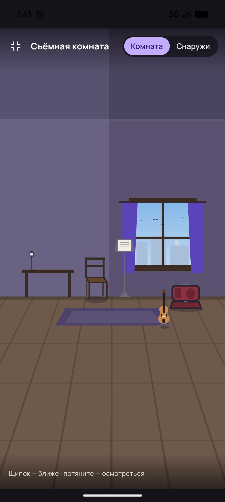
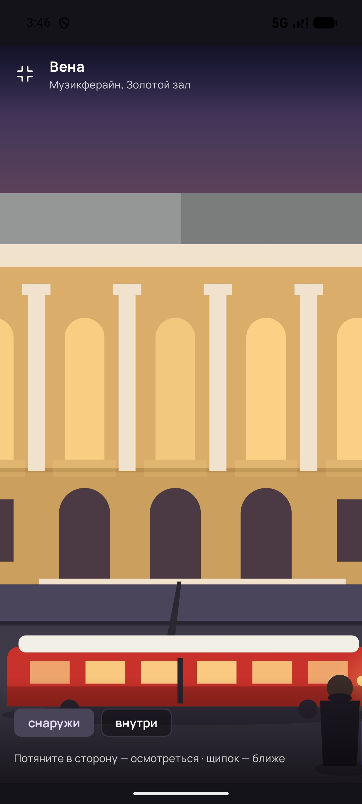
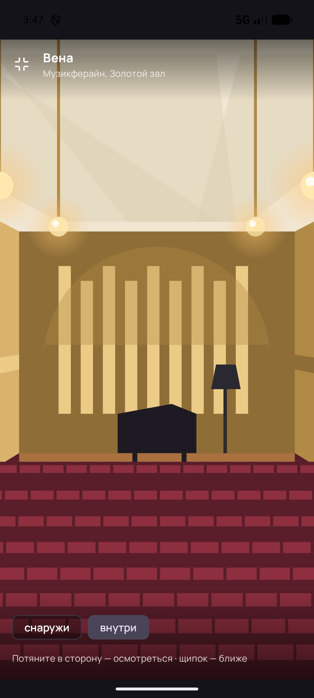

Комната дома нарисована от карниза до пола, продолженного к зрителю, и заполняет телефон целиком. Открытка путешествия нарисована в полосе 412 × 260 — во весь экран она либо увеличена в 3,5 раза (места не видно), либо лежит под пустым небом. Справа — та же Вена в новом кадре −420 … 600.



Ничего не потеряно. Полоса 0 … 260 не тронута ни в одной локации: карточка «Занятий», экран остановки, лента и прибытие кадрируют её как раньше — 31g. Новое живёт только выше 0 и ниже 260.
Один кадр на все локации: −420 … 600 по высоте, 0 … 412 по ширине — 1 060 единиц. Экран центрируется на середине открытки (y = 130) и прижимается к краю кадра, если не помещается. Ниже — весь кадр Вены и окна двух телефонов на нём.
Почему хватает. Экран узкий — единиц видно больше: на 360 dp ширины рисунок всё равно занимает 412 единиц, поэтому 640 dp высоты — это 732 единицы (−236 … 496). 20 : 9 (412 × 915) показывает 915 единиц из 1 060 — запас 72 сверху и 12 снизу. Самый вытянутый 21 : 9 (412 × 961) прижимается к нижнему краю и показывает −361 … 600. Щипок до 2,5× и перетаскивание остаются внутри кадра: пустоты не покажет ни то, ни другое.
Вверх — высокое небо со своей приметой у каждого города: та башня, купол или шпиль, что видно с этого места на самом деле. Каждая примета стоит на земле и уходит за главное здание — в небе ничего не висит. Вниз — площадь, улица, набережная, парк или гавань, доведённые до ног зрителя.
Днём высокое небо держит градиент skyHigh → sky и пять облаков на всю высоту; звёзд нет. Приметы и передний план те же — меняются только палитра и то, что светится.
Четыре построителя получили потолок и то, что под ногами. Коробка (HALL): кессоны над головой, штанги люстр доходят до потолка, партер продолжен к зрителю. Подкова (HORSESHOE): свод вокруг купола заполняет углы, а под ногами — доски сцены, потому что подкову мы видим со сцены. Виноградник: «облака» потолка над головой, терраса, в которой сидим, — к нам. Неф: та же прогрессия арок, ещё четыре пролёта.
Кадр залов со сцены не меняется: −240 … 460, Live стоит на нём. Меняется только потолок у Зальцбурга, Праги, Амстердама, Петербурга, Москвы и Сиднея — правило второй Вены: кессоны сжимаются к задней стене, рёбра сходятся к точке схода (206, 150). И пылинки в рабочем свете там, где не двигалось ничего: Берлин, Лейпциг, Лондон, Нью-Йорк, Сидней.
Свет. Всё, что здесь движется, живёт только при горящем свете и замирает вместе с ним (3.27): пылинки видны в луче, а луча при погашенном свете нет. Цвета зон по-прежнему ничего не значат.
Полоса открытки продолжает работать сама по себе: карточка «Занятий» и экран остановки кадрируют те же 412 × 260, что и раньше. Landscape показывает середину полосы — 185 единиц из 260.
Новый вид движения ровно один: peck. Остальное — словарь формата, с числами.
Один файл. Код лежит в locations.js рядом с этим листом. Он не копирует ни одной строки ваших сцен: как и export.js, он вырезает помощники и SCENES из Путешествие.dc.html и запускает их вместе с extra-scenes.js и stage-scenes.js. Продолжение — это слои, вставленные в готовую сцену: высокое небо сразу после слоя SKY, передний план — в конец.
Правило, на котором всё держится. У каждой сцены одна линия схода пола: снаружи это горизонт y = 190, в коробке 134, в подкове 107, в нефе 124, на сцене 150. Ниже неё всё, что лежит на этом полу, растёт пропорционально (y − линия), а ряды идут геометрической прогрессией y⁺ = v + (y − v)·q. Второй картины не нужно — нужна та же плоскость, доведённая до зрителя.
Палитры. Один новый токен на локацию — skyHigh. Остальные нужны только правилу неба и переднему плану и одинаковы у всех: их можно держать в «вечере» и «дне», а не в каждой локации.
Вес. Самая тяжёлая сцена была 760 слоёв (виноградник Берлина) — стала 998. Тяжелее всех теперь Токио изнутри, 982; снаружи тяжелее всех Нью-Йорк, 467. Все в пределах ваших ~1 500. Мелочь держали крупной и редкой: швов мостовой 13, а не 130; спинок в ряду не больше 18; звёзд 44 на всё небо.
Что легко подвинуть. Приметы города — список из десяти-двадцати слоёв в OUT[key].high, вид земли — одно слово в OUT[key].fore. Если вид земли выбран неверно (Лондон — парк, Москва — площадь, Берлин — улица), это одна правка на локацию.